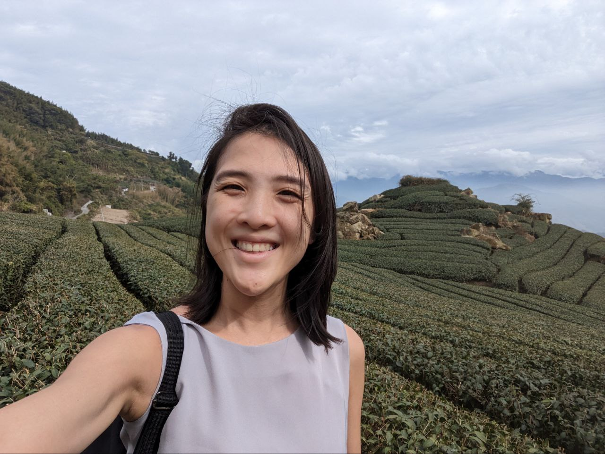

Shuyi's Portfolio

Summary
I'm Han Shuyi, married with one child. I'm a physiotherapist by training and am currently on a break to care for my baby and am looking for more flexible hours of employment to suit the change in needs of my family.
Education
- 1999-2004 at Pei Hwa Presbyterian Primary School
- 2005-2006 at Methodist Girls School Sophia Blackmore Class
- 2007-2010 at National Junior College Integrated Programme
- 2012-2015 at La Trobe University (Melbourne)
Work Experience
- 2011 After school care teacher with Nascans at Nan Hua Primary School
- 2016 Feb-2022 Feb: NUHS- Jurong Health Campus
- 6 monthly rotations across Acute Neuro-rehab, Acute orthopaedics, Outpatients Sports and Sub-acute orthopaedics
- 2018-2022 in Jurong Community Hospital Orthoapaedic Physiotherapy team with a rotation to the neurological team and occasional outpatient coverage in DRC
- Leadership:
- Therapy Assistant in charge for 2 years
- Team lead for Orthopaedic team in JCH Physiotherapy department
Skills
- Proficient in Microsoft Office
- Languages:
- English: fluent in speech and writing
- Chinese: fluent in speech and writing
- Minimal conversational Malay, Hokkien and Cantonese to engage clients in therapy
- able to read and understand some French
- NDT trained in 2020
- SIT certified Clinical Educator from 2020: taken 6 batches of students
Achievements
- PSLE aggregate score of 267 (+3) in 2004
- 2008 O Levels
- Obtained A2 in French
- Obtained A2 in Higher Chinese
- 2010 A Levels:
- 4 As in H2 Physics, Chemistry, Mathematics and Economics
- A in General Paper
- A in Project Work
- Obtained MOH Overseas Scholarship in 2011
- Bachelors in Health Sciences and Masters in Physiotherapy Practice in 2015
- Service Quality Silver Award in 2021
- Community Care Excellence award Silver in 2021
- Completed 2 Quality Improvement Projects in JCH
About MeContact